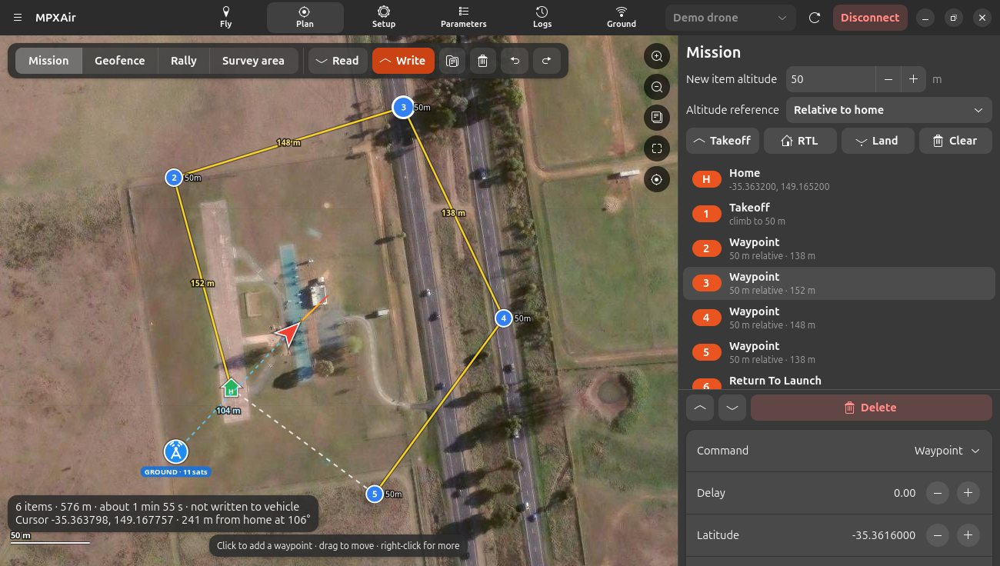

Plan screen
Create missions, geofences and rally points on the map, and send them to the aircraft.

Make a mission
- Set New item altitude and the Altitude reference in the side panel.
- Press Takeoff to add a takeoff (only one is allowed; pressing it again selects it).
- Click the map to add waypoints. Drag a waypoint to move it.
- Finish with RTL (return to launch) or Land.
- Press Write. A window shows each part being sent and what the aircraft confirmed.
The bottom-left card shows the number of items, the total distance and an estimated flight time. It says not written to vehicle until you press Write.
Right-click on the map
Waypoint, spline waypoint, loiter (turns / time / until told otherwise), land here, point camera here (ROI), set the planned home.
Selecting and editing
- Click an item in the list (or its marker) to select it. Ctrl+click adds or removes items, and Shift+click selects a range.
- The editor shows only the fields that command uses, with the same names as Mission Planner. Hover over a field to see what it means.
- Changing a waypoint to Takeoff removes its map position (a takeoff climbs straight up). Changing it back puts it next to the previous waypoint.
- With several items selected, you can set the altitude of all of them at once.
- Move items up or down, and delete with Delete. Undo with Ctrl+Z and redo with Ctrl+Shift+Z.
Altitude reference
| Reference | Meaning |
|---|---|
| Relative to home | Height above the takeoff point. This is the usual choice. |
| Above sea level | Absolute altitude (AMSL). |
| Above terrain | Height above the ground below. Needs terrain data on the aircraft. |
Common commands
| Command | What it does |
|---|---|
| Waypoint | Fly to a point. Delay waits there for some seconds. |
| Spline Waypoint | Fly a smooth curve through the point. |
| Takeoff | Climb to the altitude. |
| Loiter Turns / Time / Unlim | Circle or hover for a number of turns, for some seconds, or until told otherwise. |
| Return To Launch | Go home (and land, for copters). |
| Land | Land at the point (or where it is). |
| Do Change Speed | Change speed for the rest of the mission. |
| Do Set ROI | Point the camera or gimbal at a location. |
| Do Jump | Repeat part of the mission. |
Geofence
Switch to Geofence at the top of the map.
- Click to add the corners of an inclusion polygon (the aircraft must stay inside).
- Right-click for an exclusion polygon (keep out), inclusion or exclusion circles, or the return point.
- Settings… turns the fence on or off and sets the maximum altitude and the breach action.
Writing the fence shape doesn't switch the fence on. Use Settings… (FENCE_ENABLE).
Rally points
Switch to Rally and click to add safe places for RTL to go instead of home.
Survey grid
- Switch to Survey area and click the corners of the area.
- Press Generate grid… and choose the line spacing, direction, altitude and turn margin.
- MPXAir adds back-and-forth waypoints covering the area.
Clearing
The bin button on the map toolbar can clear the mission, geofence, rally points, survey area or everything. Each mode also has a Clear button in the side panel. When connected, you can choose Clear plan (the aircraft keeps its copy until you Write) or Clear plan and vehicle (erase the aircraft's copy straight away).
Read, write and files
- Read gets the mission, geofence and rally points from the aircraft, with a progress window.
- Write sends them and shows what was confirmed, for example Mission: 5 items written and confirmed.
- The Files button loads and saves
.waypointsfiles (the Mission Planner format) and.polysurvey areas.